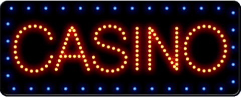

Domov
Tip 1) Ak vidíte takýto obrázok, je lepšie neklikať!



Tip 2) Je lepšie stiahnuť si blokovač reklám, je to veľmi užitočné, tu je odkaz pre tých, ktorí používajú Google Chrome:
Adblock PlusTip 3) Sťahujte iba z oficiálnych stránok
Tip 4) Neklikajte na zvláštne odkazy, ktoré vám môžu poslať aj vaši priatelia
Tip 5) Použite antivírus, ja osobne používam Windows Defender, úplne stačí nájsť a opraviť problémy, no, ak sa obávate o svoj počítač, môžete si stiahnuť KVRT z oficiálnej stránky:
Kaspersky Virus Removal ToolTip 6) Ak si chcete stiahnuť VPN, sťahujte len z oficiálnych zdrojov, ja osobne používam rozšírenie Google Choma s názvom Touch VPN
Touch VPNTip 7) Je lepšie nedávať pas ani osobné údaje len tak hocikomu, neklikať na podivné odkazy a obrázky, nesťahovať z cudzích stránok a trhov a vo všeobecnosti buďte opatrní, pretože na internete je veľa podvodníkov. Ďakujem za tvoju pozornosť!
Ak máte otázky k téme alebo niečomu nerozumiete, tu sú moje kontakty:
Email: laptevdima40@gmail.com